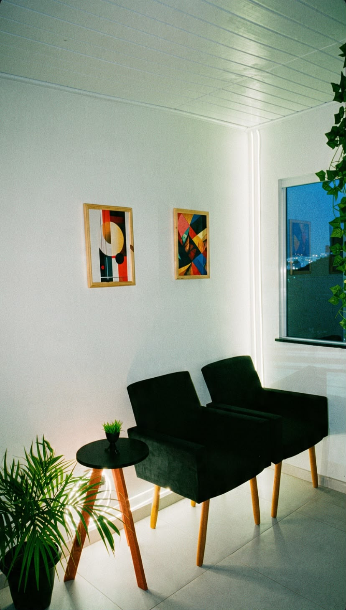
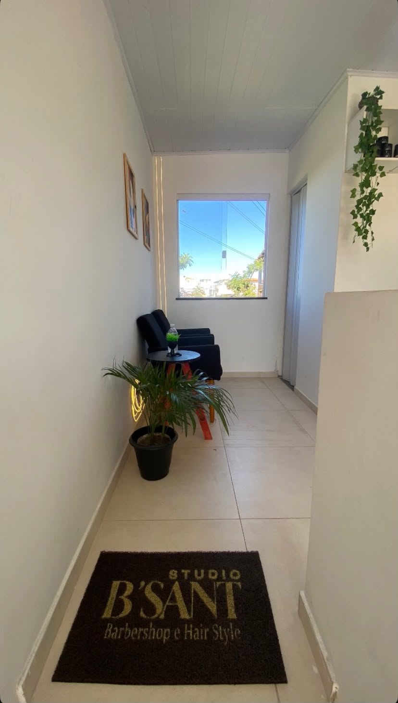
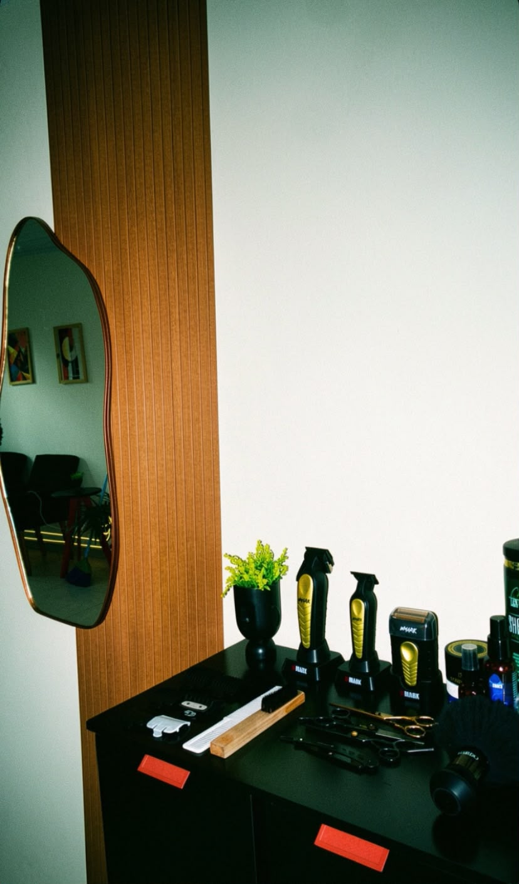

Barbershop e Hair Style
Studio B'Sant
Corte na régua, barba bem desenhada e o cuidado de quem entende de cabelo. Chegue, sente e saia do seu jeito.
Serviços
Nossos trabalhos
Nenhum trabalho nessa categoria ainda.
Veja em vídeo
Um gostinho do resultado em movimento. Toque para assistir.
Um espaço para se cuidar sem pressa
O Studio B'Sant nasceu da vontade de unir a tradição da barbearia com o olhar atual do hair style. Cada atendimento é feito com hora marcada, para você ser atendido sem fila e sem correria.
Ferramentas higienizadas, produtos de qualidade e conversa boa fazem parte do serviço.
Nosso espaço
Um ambiente pensado para você relaxar enquanto é atendido.


